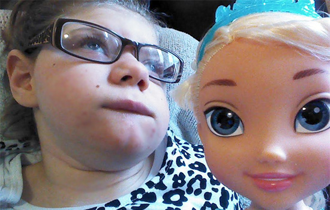

I would like to tell you about Sara. At 2 months of age Sara was diagnosed with Infantile Spasms. Her life is plagued by seizures that have been detrimental to her development but through it all, Sara remains my shining star.
I was told that Sara wouldn’t live to be 3 years old. Sara is now 8 and has outlived her life expectancy by 5 years. Through it all she has shown so much strength and tolerance. Sara loves to snuggle and enjoys story time. She loves having her teeth brushed and her hair blown dry. Over this last year she has frequently shown huge smiles so rarely seen in the past, improved her grip and vision skills, and just to show she could, she stood for her mama on her own 2 feet with little assistance.
Sara has given me more than I ever thought possible. The light in her little face is what keeps me striving to care for her the very best that I can. Sara’s diet is all blenderized and organic. She can’t tolerate soy, dairy or gluten, and all her many vitamins and supplements help to keep her body strong and working the very best that it can. Caring for Sara requires special transport and stepping out of full time employment for five years.
Thank you so much for considering donating for Sara.
Love, Keely
I try, in every way I can, to give Sara the best quality of life possible. The expenses add up very quickly. Without the help of family and friends I would not be able to care for her the way that I have. Thank you for being a part of Sara's care, for supporting us, and for sharing in our lives. I hope that Sara’s smile warms your spirit and brings you joy.
Saturday April 11th, 2015 from 10am-2pmTreesdale Community Center
1 Treesdale Commons Lane
Gibsonia, PA. 15055
Thank you to all who attended or donated and made Sara's day so special. She attended the event, and was awake and alert for the duration. It is wonderful to see how many people have empathy for Sara's condition and the challenges it brings.